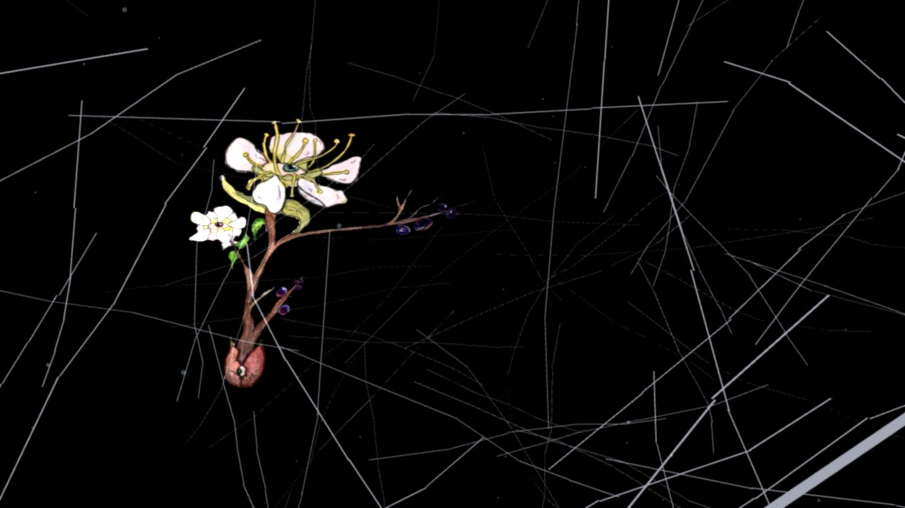
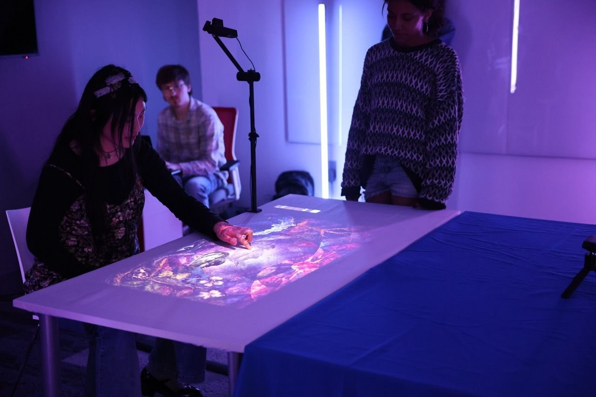
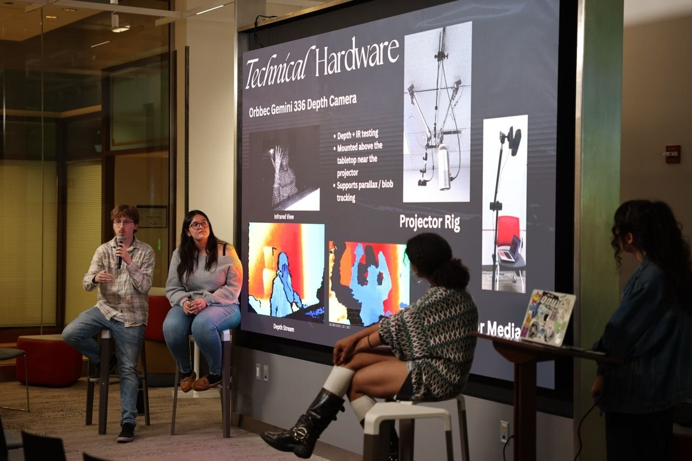

Project Projection — Interactive Projection Installation
A Jarvis Challenge installation that turned student artwork into a participant-driven table-to-wall experience. TouchDesigner connected the projected making surface to a responsive 3D wall world, room lighting, and a sequence of reveal, collection, and assembly interactions.

Role / Contribution
I built the wall world, particle systems, state-driven 3D camera, head-parallax behavior, and wave-meter finale, along with refined interaction modules for the first experience. I also built the input-routing system, tested several camera and hand-tracking approaches, integrated the team’s interactions into the unified build, and developed a scripting workflow for making structured changes to the TouchDesigner network with automatic backups.
Project Context
Developed by Paige Desimone, Frida Frausto, Jailyn Turner, and me for the 2026 Jarvis Challenge, the installation was showcased on May 29, 2026. Visitors used a projected tabletop as the making surface while a front-wall projection acted as the artwork’s responsive inner world. The experience moved through revealing, focusing, collecting, assembling, and finally uncovering a completed student artwork.
Selected Visuals


Showcase / Documentation


Higher-resolution showcase documentation will be added as it becomes available.
System / Process
TouchDesigner coordinated two projectors, interaction state, real-time visuals, audio triggers, and four networked floor lights. The build separated input, state, experience logic, wall-world rendering, lighting, and final output so individual systems could be tested and revised without disrupting the full installation. The wall world combined instanced pencil strokes, particles, shader effects, a parallax camera, and visual payoffs tied directly to actions on the table.
Tracking + Input Tests
Before the final showcase setup, I tested multiple input approaches—including MediaPipe camera tracking, Leap Motion hand tracking, and Orbbec depth-camera workflows—to evaluate how physical gestures could drive the projected world. These tests informed the final interaction architecture, while the showcase installation used an operator-assisted fallback to stay reliable under final projection conditions.


Tools / Technical Workflow
- TouchDesigner and Python for interaction state, input routing, and system integration
- GLSL effects, feedback-based reveal mechanics, and real-time particle systems
- Dual-projector table and wall mapping with a responsive 3D wall scene
- MediaPipe, Leap Motion, and Orbbec Gemini 336 tracking prototypes
- Networked Govee lighting linked to the projected color system
Status
The final TouchDesigner build and written documentation are archived. Additional showcase video and higher-resolution documentation will be added as they become available.